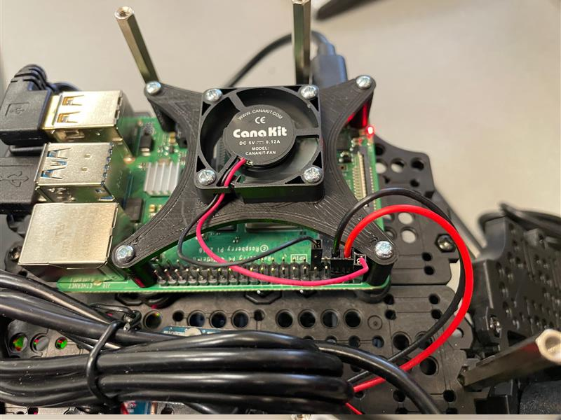
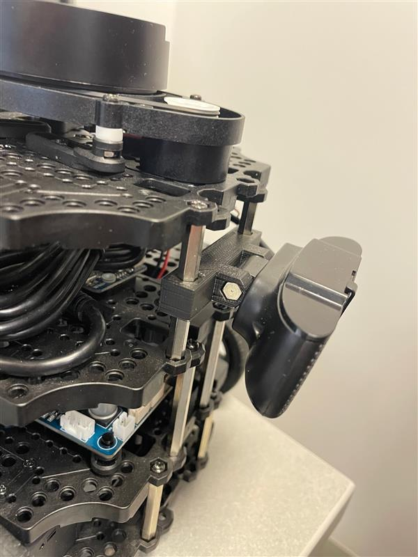
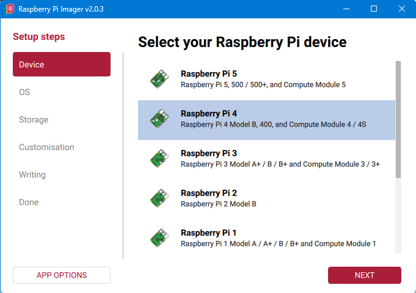
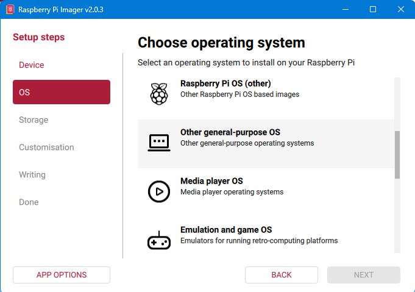
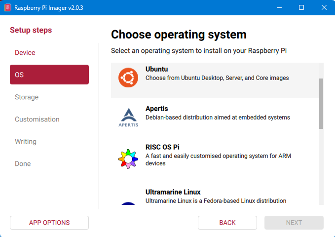
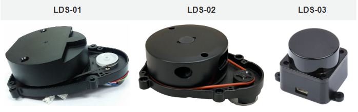

🔧 Robot Setup (2027)#
This guide walks through the steps to install Ubuntu Server 24.04 LTS, ROS2 Jazzy, and all dependencies on a Raspberry Pi 4. This Pi is embedded within the Robotis TurtleBot3 Burger along with a USB camera. The robotics system, TurtleBot3, is utilized in the United States Air Force Academy’s Electrical and Computer Engineering department to teach undergraduate students robotics.
This guide is adapted from the TurtleBot3 e-Manual.
Created by Steve Beyer, 2022
Updated by Stan Baek, 2023, 2026
TurtleBot3#
Below is a list of recommended hardware and links. Other off-the-shelf components can replace the ones below.
USB Camera (Any USB Cam will work, this is the one we use)
128 GB High Speed MicroSD card
Monitor, mouse, and keyboard
If using an older version of the TurtleBot3 with a Jetson Nano or Raspberry Pi 3B+, you will need to purchase a Raspberry Pi 4B (preferably with 4 GB or 8 GB of RAM)
Hardware Assembly#
Follow the Robotis e-Manual for hardware assembly stopping after installing the Raspberry Pi.
Raspberry Pi#
A Raspberry Pi 4B with 4 GB or 8 GB of RAM is used throughout this curriculum. The RPi4 runs warm under load; ensure adequate cooling is in place. Heatsinks are recommended, and an active cooling fan significantly improves sustained performance. We used this 3D printed bracket to mount a fan.
{kind=link}

Camera#
After installing the Raspberry Pi level of the TurtleBot3 you need to install the USB Camera Mount prior to finishing the robot build. The mount used in this course can be found in the curriculum material and is installed on two of the front standoffs on the TurtleBot3.
{kind=link}

Ubuntu Installation#
Download Ubuntu and flash MicroSD card#
There are multiple ways to download and install Ubuntu 24.04 LTS to a MicroSD card, but the Raspberry Pi Imager is one of the easiest. Instructions for installing the imager on your operating system can be found on the Raspberry Pi OS software page.
Once installed, start the imager and select Raspberry Pi 4.
{kind=link}

Scroll down the menu and select Other general purpose OS.
{kind=link}

Next, select Ubuntu.
{kind=link}

Lastly, scroll and select the latest 64-bit version of Ubuntu Server 24.04 LTS (64-bit).
Now that you have the correct image selected, choose the storage device that corresponds to the MicroSD card.
Once complete you should have an Ubuntu SD card! Ensure your Raspberry Pi is powered off, connected to a monitor, keyboard, and mouse, and insert the SD card.
Configuring Ubuntu#
Login and changing password#
Once Ubuntu boots up you will be prompted to enter the login and password. It may take a few minutes on first boot to configure the default username and password, so if login fails, try again after a few minutes.
Adding username#
We need to create a new user named pi for students.
Create the pi user:
sudo adduser pi
Enter an easy-to-remember password when prompted, then press Enter through the remaining prompts until you return to the terminal.
Grant sudo privileges:
sudo adduser pi sudo
Switch to the new user:
exitThen log in using the pi account credentials.
Once logged in as pi, your terminal prompt should show
pi@ubuntu:. Confirm your current directory by running:pwdThis should display
/home/pi.
Change hostname#
If you have multiple robots on your network it is good to give each a unique hostname. We number each robot from 0–n and each robot has a corresponding hostname (e.g., robot0).
sudo hostnamectl set-hostname robot0
The new hostname will not take effect until reboot. Don’t reboot yet! There are a few more things to accomplish first.
Set up Wi-Fi (Optional)#
Until a desktop GUI is installed we have to work with the command line to set up Wi-Fi. This is the most reliable method and we will delete these changes once a GUI is installed.
First, determine the name of your Wi-Fi network adapter:
ip linkExpected output (the built-in Wi-Fi adapter is typically
wlan0):pi@ubuntu:~$ ip link 1: lo: <LOOPBACK,UP,LOWER_UP> mtu 65536 qdisc noqueue state UNKNOWN mode DEFAULT group default qlen 1000 link/loopback 00:00:00:00:00:00 brd 00:00:00:00:00:00 2: eth0: <NO-CARRIER,BROADCAST,MULTICAST,UP> mtu 1500 qdisc mq state DOWN mode DEFAULT group default qlen 1000 link/ether e4:5f:01:15:5b:30 brd ff:ff:ff:ff:ff:ff 3: wlan0: <BROADCAST,MULTICAST,UP,LOWER_UP> mtu 1500 qdisc fq_codel state UP mode DORMANT group default qlen 1000 link/ether e4:5f:01:15:5b:31 brd ff:ff:ff:ff:ff:ff
Open the
/etc/netplan/50-cloud-init.yamlfile:sudo nano /etc/netplan/50-cloud-init.yaml
Before editing the config, generate an encrypted PSK for each WPA2 network using
wpa_passphrase. The PSK is derived from both the SSID and the passphrase, so each SSID requires its own hash even if the plain-text password is the same:wpa_passphrase YOUR-SSID your-plain-text-passphrase
Example output:
network={ ssid="YOUR-SSID" #psk="your-plain-text-passphrase" psk=3a7f2c1d9e4b8f0a6c5d2e1f7a3b9c4d8e2f1a0b6c3d7e9f2a1b4c8d0e5f3a7b }
Copy the 64-character
psk=value (without quotes) for use in the config below. The#psk=comment line is just a human-readable reminder and is not used.Edit the file (use spaces, not tabs). You can add multiple access points so the robot automatically connects to whichever network is in range. For open networks (no password), use
key-management: none:# This file is generated from information provided by the datasource. Changes # to it will not persist across an instance reboot. To disable cloud-init's # network configuration capabilities, write a file # /etc/cloud/cloud.cfg.d/99-disable-network-config.cfg with the following: # network: {config: disabled} network: version: 2 ethernets: eth0: optional: true dhcp4: true dhcp6: true wifis: wlan0: optional: true dhcp4: true regulatory-domain: "US" access-points: "YOUR-HOME-SSID": auth: key-management: "psk" password: "<64-char PSK from wpa_passphrase>" "AFAcademy_Guest": auth: key-management: "none"
The Pi connects to whichever network is in range. If both are visible simultaneously, it picks based on signal strength.
Save and exit, then apply:
sudo chmod 600 /etc/netplan/50-cloud-init.yaml sudo netplan apply
Static IP Address (Optional)#
It may be beneficial to set up a static IP address. First determine your subnet and gateway:
ubuntu@ubuntu:~$ ip route
default via 192.168.0.1 dev wlan0 proto static
192.168.0.1/24 dev wlan0 proto kernel scope link src 192.168.0.201
Then edit the Netplan config to set a static IP within the subnet range:
# This file is generated from information provided by the datasource. Changes
# to it will not persist across an instance reboot. To disable cloud-init's
# network configuration capabilities, write a file
# /etc/cloud/cloud.cfg.d/99-disable-network-config.cfg with the following:
# network: {config: disabled}
network:
version: 2
ethernets:
eth0:
optional: true
dhcp4: true
dhcp6: true
wifis:
wlan0:
optional: true
dhcp4: false
regulatory-domain: "US"
addresses:
- 192.168.0.208/24
routes:
- to: default
via: 192.168.0.1
nameservers:
addresses: [192.168.0.1, 8.8.8.8, 1.1.1.1]
access-points:
"YOUR-HOME-SSID":
auth:
key-management: "psk"
password: "<64-char PSK from wpa_passphrase>"
"AFAcademy_Guest":
auth:
key-management: "none"
Disable Automatic Updates#
Ubuntu will attempt to apply system updates in the background. This has caused issues in the past with ROS dependencies and keys. Disabling automatic updates allows you to control when Ubuntu installs updates. While this is not a good habit for general computer security, it is fine for an embedded robotics system. Ensure you periodically update and upgrade your system manually.
Open the auto updater configuration file:
sudoedit /etc/apt/apt.conf.d/20auto-upgradesChange the content from:
APT::Periodic::Update-Package-Lists "1"; APT::Periodic::Unattended-Upgrade "1";
to:
APT::Periodic::Update-Package-Lists "0"; APT::Periodic::Unattended-Upgrade "0"; APT::Periodic::AutocleanInterval "0"; APT::Periodic::Download-Upgradeable-Packages "0";
Prevent boot-up delay when there is no network at startup:
sudo systemctl mask systemd-networkd-wait-online.service
Disable Suspend and Hibernation:
sudo systemctl mask sleep.target suspend.target hibernate.target hybrid-sleep.target
Reboot the Raspberry Pi:
sudo reboot
Verify changes#
After reboot, your new hostname should appear at the terminal (e.g., pi@robot0). Confirm Wi-Fi connectivity and IP address:
ip addr show wlan0
You can now SSH into the TurtleBot3 from another machine on the same network:
ssh pi@IP_ADDRESS
or, if your network provides Dynamic DNS:
ssh pi@HOSTNAME
Update and Upgrade#
Since we turned off automatic updates, periodically update and upgrade manually:
sudo apt update && sudo apt upgrade -y
Install Ubuntu Desktop (optional)#
A desktop GUI is not necessary for a remote machine like TurtleBot3 and will consume roughly 1.4 GB of RAM. If a GUI is needed:
sudo apt -y install ubuntu-desktop
If you install Ubuntu Desktop and want to use the GUI to configure Wi-Fi, remove the Wi-Fi settings from /etc/netplan/50-cloud-init.yaml first. The file should be restored to its minimal form:
# This file is generated from information provided by the datasource. Changes
# to it will not persist across an instance reboot. To disable cloud-init's
# network configuration capabilities, write a file
# /etc/cloud/cloud.cfg.d/99-disable-network-config.cfg with the following:
# network: {config: disabled}
network:
ethernets:
eth0:
dhcp4: true
optional: true
version: 2
wifis:
wlan0:
dhcp4: true
optional: true
You can then use the GUI interface in the top-right of the screen to set up a Wi-Fi connection.
Install RTL8723BU driver (Optional for Ubuntu 24.04, not fully tested)#
We use a Wi-Fi dongle to create an access point, allowing a remote master computer to directly control the robot. The specific adapter is the Xinghuatian Tech Combination WiFi + Bluetooth® 4.0 USB Adapter.
Install build prerequisites:
sudo apt update sudo apt install -y git dkms build-essential linux-headers-$(uname -r)
Remove any conflicting Realtek modules:
sudo modprobe -r rtw88_8723b 2>/dev/null sudo modprobe -r rtl8723bu 2>/dev/null
(Optional) Verify no 8723 modules are loaded:
lsmod | grep 8723
Install the RTL8723BU driver from lwfinger/rtl8723bu.git:
git clone https://github.com/lwfinger/rtl8723bu.git cd rtl8723bu source dkms.conf sudo mkdir -p /usr/src/$PACKAGE_NAME-$PACKAGE_VERSION sudo cp -r core hal include os_dep platform dkms.conf Makefile rtl8723b_fw.bin \ /usr/src/$PACKAGE_NAME-$PACKAGE_VERSION sudo dkms add $PACKAGE_NAME/$PACKAGE_VERSION sudo dkms autoinstall $PACKAGE_NAME/$PACKAGE_VERSION
Load the module and verify:
sudo modprobe rtl8723bu lsmod | grep 8723
Expected output:
8723bu 1048576 0 cfg80211 970752 4 brcmfmac,mac80211,8723bu,rtl8xxxu
Rename the interface: By default,
ip addrshows the Wi-Fi dongle with a long hardware-derived name (e.g.,wlx1cbfcee6196b). We standardize this towlan1across all robots. On the Raspberry Pi 4, the built-in Wi-Fi will usewlan0, and the first USB dongle detected will usewlan1.Edit the boot configuration:
sudo nano /boot/firmware/cmdline.txt
Stay on the same line — do not add a newline. Append a space followed by:
net.ifnames=0 biosdevname=0
Save and reboot. After rebooting, your interfaces will no longer have long names like
wlx1cbfcee6196b. The dongle will bewlan1.
Dual Wi-Fi Setup (Client + Access Point)#
The TurtleBot3 uses two independent Wi-Fi interfaces:
Interface |
Hardware |
Role |
Network |
|---|---|---|---|
|
Built-in Raspberry Pi Wi-Fi |
Access Point (AP) |
|
|
USB Wi-Fi (RTL8723BU) |
Client → router |
Campus/lab network |
Master PC |
Built-in & USB Wi-Fi |
Connects to AP + internet |
|
The master PC connects to the robot’s AP (wlan0) for low-latency ROS2 communication while the robot uses wlan1 for internet access. There is no NAT or packet forwarding between the two interfaces — the master PC maintains its own separate internet connection.
Step 1: Verify Interfaces#
Confirm both interfaces exist and the RTL8723BU driver is loaded:
ip link
lsmod | grep 8723
Expected:
wlan0 ← built-in Wi-Fi (will become the AP)
wlan1 ← USB Wi-Fi dongle (client to router)
8723bu ← driver loaded
Step 2: Configure Wi-Fi Client (wlan1)#
wlan1 connects to the router for internet access via Netplan. The PSK is derived from both the SSID and passphrase, so generate an encrypted key for each WPA2 network with wpa_passphrase:
wpa_passphrase YOUR-SSID your-plain-text-passphrase
Copy the 64-character psk= value from the output (not the #psk= comment line).
Edit the Netplan configuration, replacing wlan0 with wlan1 and removing any prior wlan0 entry. Multiple access points can be listed — the robot connects to whichever is in range:
sudo nano /etc/netplan/50-cloud-init.yaml
network:
version: 2
ethernets:
eth0:
optional: true
dhcp4: true
dhcp6: true
wifis:
wlan1:
optional: true
dhcp4: true
regulatory-domain: "US"
access-points:
"YOUR-HOME-SSID":
auth:
key-management: "psk"
password: "<64-char PSK from wpa_passphrase>"
"AFAcademy_Guest":
auth:
key-management: "none"
Apply and verify:
sudo chmod 600 /etc/netplan/50-cloud-init.yaml
sudo netplan apply
ip addr show wlan1 # should show inet 192.168.x.x
Step 3: Assign Static IP to the AP Interface (wlan0)#
wlan0 will be managed entirely by hostapd, so it must not appear in the Netplan wifis section — Netplan would invoke wpa_supplicant, which conflicts with hostapd. Instead, assign the static IP via a systemd-networkd drop-in file.
wlan0 has no wireless carrier until hostapd starts, so ConfigureWithoutCarrier=yes is required to assign the address before the AP is up:
sudo nano /etc/systemd/network/10-wlan0-ap.network
[Match]
Name=wlan0
[Link]
RequiredForOnline=no
[Network]
Address=192.168.50.1/24
ConfigureWithoutCarrier=yes
Apply and verify:
sudo systemctl restart systemd-networkd
ip addr show wlan0 # should show 192.168.50.1/24
Step 4: Install hostapd and dnsmasq#
sudo apt update
sudo apt install -y hostapd dnsmasq
Step 5: Configure dnsmasq (DHCP for AP Clients)#
dnsmasq assigns IP addresses to devices that connect to the robot’s AP. DNS is disabled — this is DHCP only.
sudo mv /etc/dnsmasq.conf /etc/dnsmasq.conf.orig
sudo nano /etc/dnsmasq.conf
interface=wlan0
bind-interfaces
# Disable DNS (DHCP only)
port=0
# 72-hour lease for student labs
dhcp-range=192.168.50.10,192.168.50.50,255.255.255.0,72h
Step 6: Configure hostapd (AP)#
Instead of hard-coding the SSID, generate the hostapd config from the hostname at boot so that cloned SD cards work without manual edits.
Create the template:
sudo nano /etc/hostapd/hostapd.conf.template
interface=wlan0
driver=nl80211
ssid=__HOSTNAME__
# 5 GHz / 802.11ac
hw_mode=a
channel=36
ieee80211n=1
ieee80211ac=1
country_code=US
# WPA2 security
auth_algs=1
wpa=2
wpa_passphrase=YOUR-AP-PASSWORD
wpa_key_mgmt=WPA-PSK
rsn_pairwise=CCMP
ignore_broadcast_ssid=0
Note: Replace
YOUR-AP-PASSWORDwith a shared passphrase that all master computers will use to connect to the robot AP. This passphrase is the same for all robots and is not SSID-derived, so it can be set directly here (nowpa_passphrasehashing needed).
Create the generator script that substitutes __HOSTNAME__ at boot:
sudo nano /usr/local/bin/gen-hostapd-conf.sh
#!/bin/bash
HOSTNAME=$(hostname)
sed "s/__HOSTNAME__/${HOSTNAME}/g" \
/etc/hostapd/hostapd.conf.template \
> /etc/hostapd/hostapd.conf
sudo chmod +x /usr/local/bin/gen-hostapd-conf.sh
Tell hostapd where its config lives:
sudo nano /etc/default/hostapd
DAEMON_CONF="/etc/hostapd/hostapd.conf"
Step 7: Systemd Service — Auto-generate SSID from Hostname#
Create a one-shot service that runs the generator before hostapd starts on every boot:
sudo nano /etc/systemd/system/hostapd-genconf.service
[Unit]
Description=Generate hostapd config from hostname
Before=hostapd.service
[Service]
Type=oneshot
ExecStart=/usr/local/bin/gen-hostapd-conf.sh
[Install]
WantedBy=multi-user.target
Reload systemd, enable all services, and start the AP:
sudo systemctl daemon-reload
sudo systemctl enable hostapd-genconf.service
sudo systemctl unmask hostapd
sudo systemctl enable hostapd dnsmasq
Generate the hostapd config manually for the first run (on subsequent boots the hostapd-genconf.service handles this automatically):
sudo /usr/local/bin/gen-hostapd-conf.sh
sudo systemctl restart hostapd dnsmasq
Verify the AP is running:
systemctl status hostapd
A successful output looks like this. Confirm that the Active: line shows active (running) and that wlan0: AP-ENABLED appears near the bottom:
● hostapd.service - Access point and authentication server for Wi-Fi and Ethernet
Loaded: loaded (/usr/lib/systemd/system/hostapd.service; enabled; preset: enabled)
Active: active (running) since Sun 2026-06-14 07:11:08 MDT; 12s ago
Docs: man:hostapd(8)
Main PID: 2326 (hostapd)
Jun 14 07:11:08 robot99 hostapd[2300]: wlan0: interface state UNINITIALIZED->COUNTRY_UPDATE
Jun 14 07:11:08 robot99 hostapd[2300]: wlan0: interface state COUNTRY_UPDATE->ENABLED
Jun 14 07:11:08 robot99 hostapd[2300]: wlan0: AP-ENABLED
Jun 14 07:11:08 robot99 systemd[1]: Started hostapd.service - Access point and authentication server for Wi-Fi and Ethernet
Step 8: Prevent cloud-init from Resetting the Hostname#
By default, cloud-init resets the hostname on every boot, which would break the auto-SSID feature. Disable this behavior in two places:
sudo nano /etc/cloud/cloud.cfg.d/99-disable-hostname.cfg
preserve_hostname: true
sudo nano /etc/cloud/cloud.cfg
Find and change preserve_hostname: false to:
preserve_hostname: true
Final Verification#
Reboot, then confirm everything is working:
hostname # e.g., robot42
ip addr show wlan0 # should show 192.168.50.1/24
ip addr show wlan1 # should show router-assigned IP
systemctl status hostapd # should show AP-ENABLED
systemctl status dnsmasq # should show active (running)
From the master computer, connect to the robot’s AP (SSID matches the hostname, e.g., robot42), then SSH in:
ssh pi@192.168.50.1
ROS2 Jazzy#
At this point, the Ubuntu environment is set up. Now we will set up the ROS requirements for the TurtleBot3. All instructions are adapted from the ROS2 Jazzy Installation Docs and The Robotics Back-End. ROS 2 Jazzy is the LTS version of ROS 2 that supports Ubuntu 24.04.
Installation#
Set locale#
Make sure you have a locale which supports UTF-8:
locale # check for UTF-8
sudo apt update && sudo apt install locales
sudo locale-gen en_US en_US.UTF-8
sudo update-locale LC_ALL=en_US.UTF-8 LANG=en_US.UTF-8
export LANG=en_US.UTF-8
locale # verify settings
Enable required repositories#
Ensure the Ubuntu Universe repository is enabled:
sudo apt install software-properties-common
sudo add-apt-repository universe
The official ROS 2 installation now uses the ros2-apt-source package to configure the ROS 2 repository and GPG keys automatically. Updates to the repository configuration will be handled automatically when new versions of this package are released.
Install the ros2-apt-source package:
sudo apt update && sudo apt install curl -y
export ROS_APT_SOURCE_VERSION=$(curl -s https://api.github.com/repos/ros-infrastructure/ros-apt-source/releases/latest | grep -F "tag_name" | awk -F'"' '{print $4}')
curl -L -o /tmp/ros2-apt-source.deb "https://github.com/ros-infrastructure/ros-apt-source/releases/download/${ROS_APT_SOURCE_VERSION}/ros2-apt-source_${ROS_APT_SOURCE_VERSION}.$(. /etc/os-release && echo ${UBUNTU_CODENAME:-${VERSION_CODENAME}})_all.deb"
sudo dpkg -i /tmp/ros2-apt-source.deb
Verify apt sources include noble-updates#
On a fresh Ubuntu 24.04 install, the apt sources may only include the base noble and noble-security suites. This causes dependency conflicts when installing ROS 2 packages, because security-patched library versions (e.g., liblz4-1, libzstd1, zlib1g) end up mismatched against what ROS expects. Check before proceeding:
grep Suites /etc/apt/sources.list.d/ubuntu.sources
The file contains two stanzas. Check that the first stanza (main packages) includes noble-updates and noble-backports — not just the second (security) stanza. If the first stanza’s Suites: line only shows noble, edit the file:
sudo nano /etc/apt/sources.list.d/ubuntu.sources
Update the first stanza’s Suites: line to:
Suites: noble noble-updates noble-backports
Then bring the system fully up to date:
sudo apt clean && sudo apt update && sudo apt full-upgrade -y
Install ROS 2 Jazzy#
sudo apt update
sudo apt upgrade
sudo apt install ros-jazzy-ros-base
The base version provides the bare bones of ROS 2 — minimum packaging, build, and communications libraries with no GUI tools. As the Raspberry Pi is embedded into TurtleBot3 it is ideal to keep overhead as low as possible.
Install colcon#
sudo apt install python3-colcon-common-extensions
Install ROS2 and TurtleBot3 Packages#
Install core build tools and TurtleBot3 ROS2 dependencies — drivers and message definitions for LiDAR, motors, URDF, and USB devices:
sudo apt install python3-argcomplete python3-colcon-common-extensions libboost-system-dev build-essential
sudo apt install ros-jazzy-hls-lfcd-lds-driver
sudo apt install ros-jazzy-turtlebot3-msgs
sudo apt install ros-jazzy-dynamixel-sdk
sudo apt install ros-jazzy-xacro
sudo apt install libudev-dev
Initialize rosdep, which resolves and installs ROS package dependencies from package.xml files. This is a one-time system-wide setup:
sudo apt install python3-rosdep
sudo rosdep init
rosdep update
USB Port Setting for OpenCR#
This installs a udev rule so the OpenCR board (TurtleBot3’s motor controller) is accessible over USB without sudo and with consistent permissions. Safe to run more than once — it simply overwrites the same file with the same content.
sudo cp `ros2 pkg prefix turtlebot3_bringup`/share/turtlebot3_bringup/script/99-turtlebot3-cdc.rules /etc/udev/rules.d/
sudo udevadm control --reload-rules
sudo udevadm trigger
Install Software for ECE 387#
Install USB camera drivers, OpenCV, and AprilTag libraries:
sudo apt install -y python3-pip python3.12-venv
sudo apt install -y ros-jazzy-usb-cam ros-jazzy-image-proc
sudo apt install -y ros-jazzy-v4l2-camera
sudo apt install -y python3-opencv python3-numpy ros-jazzy-cv-bridge
sudo apt install -y tree
sudo apt install -y libapriltag-dev python3-dev cmake libatlas-base-dev
sudo apt install -y cmake build-essential
sudo apt install -y libopenblas-dev liblapack-dev
Raspberry Pi Camera Module (Optional / Experimental)#
⚠️ Experimental: The RPi Camera Module requires
libcameraand additional configuration. Compatibility with Ubuntu 24.04 + ROS2 Jazzy has improved significantly over Ubuntu 22.04, but setup is more involved than a USB webcam. Test thoroughly before deploying in a course setting. The USB webcam remains the recommended camera for ECE 387.
This section covers setup for the Raspberry Pi Camera Module v2 (Sony IMX219, 8 MP) or v3 (Sony IMX708, 12 MP with autofocus). Both use the CSI ribbon cable interface and the libcamera stack rather than the V4L2/USB path used by the Adesso webcam.
Step 1: Enable the CSI camera in firmware#
Edit the Raspberry Pi firmware config:
sudo nano /boot/firmware/config.txt
Find or add the following line under the [all] section:
camera_auto_detect=1
camera_auto_detect=1 works for both v2 and v3 — the firmware detects which module is attached automatically. To pin a specific module instead:
# Camera Module v2 (IMX219)
dtoverlay=imx219
# Camera Module v3 (IMX708)
dtoverlay=imx708
If images appear corrupted or the camera fails to initialize, also set:
gpu_mem=128
Reboot after any /boot/firmware/config.txt changes:
sudo reboot
Step 2: Install libcamera tools#
On Ubuntu 24.04 for Raspberry Pi, try rpicam-apps first; fall back to libcamera-apps if the package is not found:
sudo apt install -y rpicam-apps libcamera-dev
# If rpicam-apps is unavailable:
# sudo apt install -y libcamera-apps libcamera-dev
Step 3: Verify the camera is detected#
List detected cameras:
rpicam-hello --list-cameras
Capture a test image:
rpicam-still -o ~/test.jpg
If you get No cameras available, check the CSI ribbon cable orientation and the config.txt entry, then reboot.
Step 4: Install the ROS2 camera-ros package#
camera-ros is the ROS2 wrapper for libcamera. It publishes camera frames as sensor_msgs/Image topics, compatible with the ECE 387 perception pipeline:
sudo apt install -y ros-jazzy-camera-ros
Step 5: Launch the camera node#
source /opt/ros/jazzy/setup.bash
ros2 run camera_ros camera_node
By default this publishes on /camera/image_raw. Verify with:
ros2 topic list
ros2 topic hz /camera/image_raw
Switching from the USB webcam#
The USB webcam uses ros-jazzy-usb-cam or ros-jazzy-v4l2-camera. Replacing it with camera_ros keeps the same topic name and message type (sensor_msgs/Image), so the AprilTag and stop sign detection nodes should work without modification.
Updating OpenCR Firmware#
The last step is updating the firmware for the OpenCR controller board.
Ref: https://emanual.robotis.com/docs/en/platform/turtlebot3/opencr_setup/#opencr-setup
Install required packages:
sudo dpkg --add-architecture armhf sudo apt update sudo apt install libc6:armhf
Download and extract the firmware:
wget https://github.com/ROBOTIS-GIT/OpenCR-Binaries/raw/master/turtlebot3/ROS2/latest/opencr_update.tar.bz2 tar -xvf ./opencr_update.tar.bz2
Set the OpenCR model name:
export OPENCR_PORT=/dev/ttyACM0 export OPENCR_MODEL=burger
Upload firmware to the OpenCR:
cd ~/opencr_update ./update.sh $OPENCR_PORT $OPENCR_MODEL.opencr
A successful firmware upload looks like:
pi@robot99: ~/Downloads/opencr_update $ ./update.sh $OPENCR_PORT $OPENCR_MODEL.opencr aarch64 arm OpenCR Update Start.. opencr_ld_shell ver 1.0.0 opencr_ld_main [ ] file name : burger.opencr [ ] file size : 136 KB [ ] fw_name : burger [ ] fw_ver : V230127R1 [OK] Open port : /dev/ttyACM0 [ ] [ ] Board Name : OpenCR R1.0 [ ] Board Ver : 0x17020800 [ ] Board Rev : 0x00000000 [OK] flash_erase : 0.95s [OK] flash_write : 1.31s [OK] CRC Check : D92222 D92222 , 0.004000 sec [OK] Download [OK] jump_to_fw
If not successful, refer to the OpenCR Setup guide for debug methods.
Per-User Setup#
Repeat every step in this section for each user account on the robot. Complete the system-wide sections above first, then switch to each user account (e.g.,
pi) and run through this section again.
Configure ROS2 Environment#
Ref: https://docs.ros.org/en/jazzy/Tutorials/Beginner-CLI-Tools/Configuring-ROS2-Environment.html
Add ROS environment setup to ~/.bashrc so it is sourced automatically in every new shell:
echo "source /opt/ros/jazzy/setup.bash" >> ~/.bashrc
source ~/.bashrc
Verify the environment variables are set correctly:
printenv | grep -i ROS
Expected:
ROS_VERSION=2
ROS_PYTHON_VERSION=3
ROS_DISTRO=jazzy
Set the ROS Domain ID. ROS 2 nodes on the same domain ID can communicate freely; nodes on different IDs cannot. Choose X to match the robot number (e.g., ROS_DOMAIN_ID=9 for robot99):
echo "export ROS_DOMAIN_ID=<your_domain_id>" >> ~/.bashrc
Build ROS2 Workspace#
Clone the TurtleBot3 repositories and build the workspace:
mkdir -p ~/robot_ws/src && cd ~/robot_ws/src
git clone -b jazzy https://github.com/ROBOTIS-GIT/turtlebot3.git
git clone -b jazzy https://github.com/ROBOTIS-GIT/ld08_driver.git
git clone -b jazzy https://github.com/ROBOTIS-GIT/coin_d4_driver
Remove unused navigation packages to reduce build time and memory usage:
cd ~/robot_ws/src/turtlebot3
rm -r turtlebot3_cartographer turtlebot3_navigation2
Build and source the workspace:
source ~/.bashrc
cd ~/robot_ws
colcon build --symlink-install --parallel-workers 1
echo 'source ~/robot_ws/install/setup.bash' >> ~/.bashrc
source ~/.bashrc
LDS and TurtleBot3 Configuration#
The TurtleBot3 LDS has been updated to LDS-02 since 2022. For TurtleBots purchased after 2022, use LDS-02 for the LDS_MODEL.
{kind=link}

echo 'export LDS_MODEL=LDS-02' >> ~/.bashrc
echo 'export TURTLEBOT3_MODEL=burger' >> ~/.bashrc
source ~/.bashrc
Python Virtual Environment#
Ubuntu 24.04 enforces PEP 668, which prevents pip from installing into the system Python. Use a virtual environment instead. The --system-site-packages flag makes ROS2’s Python packages (installed via apt into /opt/ros/jazzy/) visible inside the venv.
python3 -m venv ~/robot_env --system-site-packages
source ~/robot_env/bin/activate
Add the following to ~/.bashrc so the environment activates automatically on login:
echo "source ~/robot_env/bin/activate" >> ~/.bashrc
source ~/.bashrc
Optionally, make the venv name appear in yellow in the prompt:
PS1="(\[\e[33m\]robot_env\[\e[0m\]) \u@\h:\w\$ "
Python Packages#
Install common Python libraries used in perception and vision labs:
pip install "pydantic<2" scipy
pip install scikit-build cmake
pip install pupil-apriltags
For dlib, build a wheel once and distribute it to avoid recompiling on every robot (30–60 minutes per compile). If you already have a .whl file, skip to step 3.
Build the wheel (run once on one robot):
pip install wheel pip download dlib python3 -m pip wheel dlib-*.tar.gz
This produces a file like
dlib-20.0.0-cp312-cp312-linux_aarch64.whl.Transfer the wheel to other robots:
scp dlib-*.whl pi@robotX:~/
Install the wheel (on every robot, for every user):
pip install ~/dlib-*.whl
Camera Permissions#
Grant the current user access to /dev/video* devices:
sudo adduser $USER video
Then reboot:
sudo reboot
GitHub SSH Keys#
The following assumes you already have a GitHub account.
Create SSH keys using the same email as your GitHub login:
cd ssh-keygen -t ed25519 -C "github@email.com"
When prompted to “Enter a file in which to save the key”, press Enter.
Start the ssh-agent and add your private key:
eval "$(ssh-agent -s)" ssh-add ~/.ssh/id_ed25519
Open the public key (easiest via an SSH connection from a desktop machine so you can copy it):
nano ~/.ssh/id_ed25519.pubCopy the entire contents of the file.
In GitHub, go to Settings → SSH and GPG keys → New SSH key. Add a descriptive title (e.g.,
robot99), paste the key, and click Add SSH key.
Installing Dependencies for New Packages#
Whenever you or a student clones a new ROS2 package into ~/robot_ws/src, run rosdep install to automatically install any missing dependencies declared in its package.xml:
cd ~/robot_ws
rosdep install --from-paths src --ignore-src -r -y
Then rebuild the workspace:
colcon build --symlink-install --parallel-workers 1
source ~/.bashrc